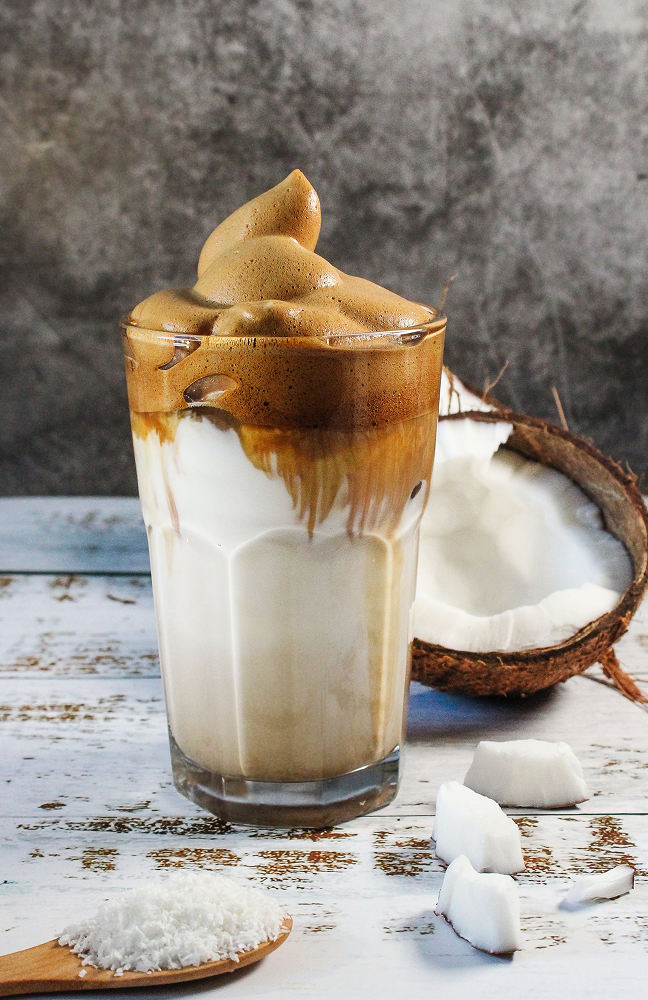

Сладкий айс-кофе с кокосовым молоком

 (189)
(189)
Сладкий айс-кофе
с кокосовым молоком

Время приготовления
10 minutes
Сложность
Легко
Стоимость
Ниже 2$
Айс-кофе с кокосовым молоком легко готовить, и он долго хранится
в холодильнике. Приготовь большую порцию и сэкономь себе несколько
походов в кофейню.
Ингредиенты
- 3 столовых ложки эспрессо порошка
-
 1 стакан горячей воды
1 стакан горячей воды
-
1 стакан кокосового молока
-
пол стакана сгущённого молока
Приготовление
- Вскипятите воду и дайте ей постоять 1-2 минуты.
- Насыпьте молотый кофе во френч-пресс и залейте горячей водой.
- Дайте кофе настояться 5 минут, затем медленно нажмите на пресс.
- Перелейте кофе в кувшин, дайте ему остыть и поставьте в холодильник
на пару часов - Вмешайте кокосовое и сгущённое молоко и подайте с большим
количеством льда - Кофе может хранится в холодильнике до 5 дней. Перед подачей
встряхните и перемешайте